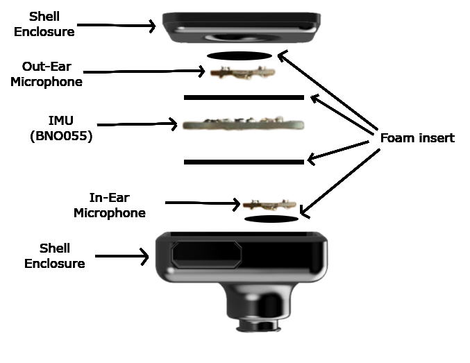

LYNX got accepted in MIT URTC'25 as a Poster
Three high school students developed an open-source multimodal earable for data collection. (Led by Hikmet, Musa, Pranav)
September 2025
Our mission is to enable individuals, caregivers, and clinicians to understand and act on continuous multimodal sensor data that captures everyday human behavior. We build ubiquitous AI systems that learn from motion, audio, physiological, and ambient signals to generate insights that support behavioral well-being. Our work spans key layers of the intelligence stack for real-world sensing, including multimodal representation learning, natural-language interaction, and resource-constrained inference on edge devices. We develop signal-processing informed neural architectures and sensor-grounded language models that reason about the physical and physiological processes underlying behavior, alongside edge machine learning methods designed for computation, energy, memory, time, and privacy constraints. These integrated efforts support applications such as infant development, sleep and self-regulation, and the dynamics of attention and emotional clarity during mindfulness practice.

Three high school students developed an open-source multimodal earable for data collection. (Led by Hikmet, Musa, Pranav)